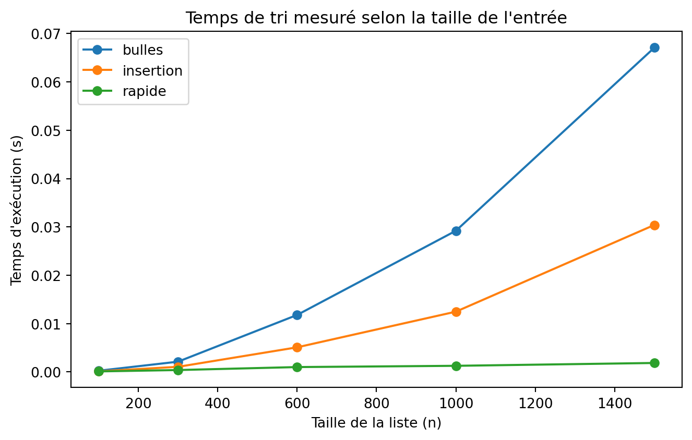

[1, 2, 3, 5, 8, 9]Notions de base — algorithmes, problèmes, complexité
2023-10-01
Note
Un algorithme est une procédure bien définie qui prend une entrée, la transforme par une suite d’étapes précises, et produit une sortie.
Un problème décrit ce qu’on veut (la relation entre entrée et sortie attendue), sans dire comment l’obtenir.
Une instance est un cas particulier du problème, avec une entrée concrète.
Exemple — Problème : trier une liste de nombres. Instance : trier [5, 3, 8, 2].
Pour un même problème, plusieurs algorithmes peuvent exister — avec des performances très différentes.
C’est exactement le cas du problème du tri, qu’on va utiliser comme fil rouge pour introduire la notion de complexité.
On va comparer trois algorithmes classiques pour résoudre ce problème.
Idée : parcourir la liste, comparer chaque paire d’éléments voisins, les échanger s’ils sont dans le mauvais ordre. Répéter jusqu’à ce que la liste soit triée — à chaque passage, le plus grand élément restant “remonte” à sa place, comme une bulle.
Idée : construire la liste triée progressivement, en insérant chaque nouvel élément à la bonne place parmi ceux déjà triés — comme on trierait des cartes à jouer dans sa main.
Idée : choisir un pivot au hasard, séparer la liste en éléments plus petits / plus grands que le pivot, puis répéter récursivement sur chaque sous-liste.
from random import randint
def tri_rapide(liste):
if len(liste) <= 1:
return liste
pivot = liste[randint(0, len(liste) - 1)]
plus_petits = [x for x in liste if x < pivot]
egaux = [x for x in liste if x == pivot]
plus_grands = [x for x in liste if x > pivot]
return tri_rapide(plus_petits) + egaux + tri_rapide(plus_grands)
tri_rapide([5, 3, 8, 2, 9, 1])[1, 2, 3, 5, 8, 9]Pour une liste de taille \(n\) :
| Algorithme | Meilleur cas | Pire cas | Cas moyen |
|---|---|---|---|
| Tri à bulles | \(n(n-1)/2\) | \(n(n-1)/2\) | \(n(n-1)/2\) |
| Tri par insertion | \(n\) | \(n(n-1)/2\) | \(n(n-1)/4\) |
| Tri rapide | \(n\log n\) | \(n(n-1)/2\) | \(\approx 1{,}39\, n\log_2 n\) |
À retenir : le tri à bulles fait toujours le même nombre de comparaisons, quel que soit l’ordre initial. Les deux autres s’adaptent aux données — parfois beaucoup plus vite, parfois non.
Complexité en temps : combien d’opérations élémentaires l’algorithme effectue-t-il, en fonction de la taille \(n\) de l’entrée ?
Complexité en espace : combien de mémoire supplémentaire l’algorithme utilise-t-il ?
Dans les deux cas, on s’intéresse à la façon dont le coût évolue avec \(n\), pas à sa valeur exacte sur une machine donnée.
Pour une taille d’entrée fixée, la performance dépend du contenu de l’entrée (déjà triée ? dans le désordre le plus défavorable ?).
Note
\(f(n) = O(g(n))\) signifie qu’à partir d’un certain rang, \(f\) est majorée par \(g\) à une constante multiplicative près : il existe \(c > 0\) et \(n_0\) tels que \(f(n) \le c \cdot g(n)\) pour tout \(n \ge n_0\).
C’est un majorant : ça sert typiquement à borner le pire cas.
Avec ces notations : tri à bulles et tri par insertion sont \(O(n^2)\) dans le pire cas, tri rapide est \(O(n \log n)\) en moyenne mais \(O(n^2)\) dans le pire cas.
Vérifions ces résultats théoriques en pratique, avec des listes aléatoires de tailles croissantes.
import time
import random
def chronometrer(fonction, liste):
debut = time.perf_counter()
fonction(liste)
return time.perf_counter() - debut
tailles = [100, 300, 600, 1000, 1500]
resultats = {"bulles": [], "insertion": [], "rapide": []}
for n in tailles:
liste = [random.randint(0, 10000) for _ in range(n)]
resultats["bulles"].append(chronometrer(tri_bulles, liste))
resultats["insertion"].append(chronometrer(tri_insertion, liste))
resultats["rapide"].append(chronometrer(tri_rapide, liste))import matplotlib.pyplot as plt
plt.figure(figsize=(7, 4.5))
for nom, temps in resultats.items():
plt.plot(tailles, temps, marker="o", label=nom)
plt.xlabel("Taille de la liste (n)")
plt.ylabel("Temps d'exécution (s)")
plt.title("Temps de tri mesuré selon la taille de l'entrée")
plt.legend()
plt.tight_layout()
plt.show()